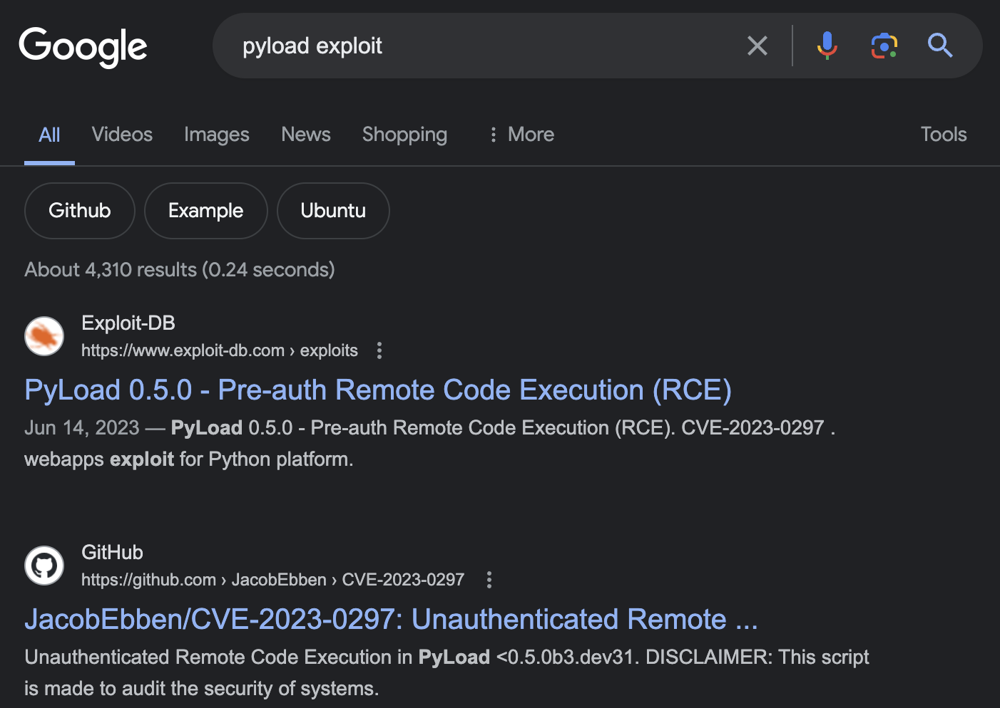

[Easy] PC

Full compromise on June 29, 2023Written on April 3, 2024
PC is my 12th machine to compromise on HackTheBox. This Linux machine features an SQL injection vulnerability on the gRPC service and a RCE vulnerability on an internal web application named pyLoad.
Enumeration
Nmap
Let's start with an Nmap scan, first scanning for any open ports, then scanning those open ports for more information.
nmap 10.10.11.214 -p- --min-rate=5000 -Pnnmap 10.10.11.214 -p22,50051 -sC -sV --min-rate=5000 -PnTCP Port 50051 - gRPC
We can see from the Nmap scan an unknown service on an unusual port, port 50051. We'll try to grab its banner for more information.
nc -nv 10.10.11.214 50051Banner grabbing doesn't yield useful information. We'll try to see if it's a web application by navigating to http://10.10.11.214:50051.
It does listen to http requests, but gives out gibberish.
With some Googling, most of the results show that a service named "gRPC" runs on port 50051. The unknown service could be gRPC.
We can find information about a vulnerability by Googling.
We haven't confirmed that this port is using gRPC yet. Luckily, this blog mentions two possible tools we can use: gRPCurl and gRPCui. We will use gRPCui since it has a graphical interface. Following the gRPCui documentation, we can run it without installing it (I had issues installing it on my silicon Mac).
go run ./cmd/gRPCui/gRPCui.go -plaintext 10.10.11.214:50051Grpcui successfully connected to the target machine and now we have this screen:
This verifies that the unknown service on port 50051 on the target machine was using gRPC.
Exploring the portal, the gRPC service only has one endpoint named SimpleApp with three methods: LoginUser, RegisterUser, and getInfo.
We can interact with each method, but it seems we can't do anything until we register and login to our own user. If we try to use getInfo, it throws an authorization error and asks for a token.
We'll register a user with a name of hyken and a password of 1234.
Now we'll login to get our token.

Now that we have our token, we can try to use getInfo. We'll add a "token" header with the token as the value, removing the "b" and the " ' " from the string.
As a result, we get an message from the server saying that the admin is working hard to fix the issue.
Exploit - SQL Injection
The blog stated that gRPC applications are vulnerable to SQL injection attacks. I've confirmed this by changing the ID to "1 union select 99999". The service should throw an error since "1 union select 99999" is not a valid ID, but instead it executed the SQL query and outputted "99999".
Since we know we can use SQL injection, we can capture the request with Burpsuite, throw it in a file, and run SQLmap with it to automate exploitation.
First we'll capture the request with Burpsuite.
Then we'll copy the request, paste it in a file named request.txt, and use SQLmap.
nano request.txtsqlmap -r request.txtSQLmap was able to find the vulnerability using 3 different techniques. It also found that it's a SQLite database.
Now we'll extract information from the target's database. First we'll see what kind of tables it holds.
sqlmap -r request.txt --tablesThe account tables look interesting. We'll dump it.
sqlmap -r request.txt -T tables --dumpWe now have credentials for user sau. Does this work with SSH?
ssh sau@10.10.11.214HereIsYourPassWord1431Yes it does. We're in. We'll get user flag.
cat user.txtPrivilege Escalation - RCE in pyLoad
Performing usual enumeration for privilege escalation, we find a something listening locally on port 8000.
netstat -anoWe can view this on our attack browser by using dynamic port forwarding via SSH.
We'll SSH into the target machine as sau, but provide the -D option along with port. The -D option will make SSH act as a SOCKS proxy server, listening to requests on the provided port on the attack machine and forwards the request to the target. This will allow us to navigate to http://127.0.0.1:8000 on our browser using the SOCKS protocol, as SSH will forward the request to the target and retrieve the contents at http://127.0.0.1:8000.
ssh -D 1080 sau@10.10.11.214Now I'll navigate to http://127.0.0.1:8000.
(I have an extension installed on my Firefox browser called FoxyProxy. This allows me to switch proxy servers on the fly within my browser. If I didn't have the extension, then I would've used proxychains to open Firefox.
We are greeted with a pyLoad login page. pyLoad is basically an open-source download manager with a web interface, all written in Python. I wasn't able to login to the application, but if we search for an exploit, we get a lot of results mentioning CVE-2023-0297, a remote code execution vulnerability without the need to authenticate.
Using this GitHub repository "bAuh0lz/CVE-2023-0297_Pre-auth_RCE_in_pyLoad" as reference (this is the one I used at the time), an attacker can send a crafted POST request to the /flask/addcrypted2 endpoint. The data is passed to a function named eval_js(), which is then passed into js2py.eval_js(). This function executes JavaScript code.
Taking it further than just executing JavaScript code, the js2py library has pyimport enabled by default. Pyimport allows importing Python code from JavaScript. This means the js2py.eval_() can execute Python code. This also means an attacker can send malicious Python code to /flask/addcrypted2 and be executed. This is the vulnerability.
We can use the exploit code proved in the repository to execute commands. Since we have access to the target machine, we can use the exploit code within the target machine and send the POST request to localhost:8000.
If we try to execute any command, we get a 500 error code. We don't have direct output, so we have to do this blind. To get root flag, we can simply read the file and output it to another file in the /tmp directory. This way, we can read the output and get root flag.
curl -i -s -k -X $'POST' --data-binary $'jk=pyimport%20os;os.system(\"cat%20/root/root.txt%20%3E%20/tmp/pwned_flag");f=function%20f2(){};&package=xxx&crypted=AAAA&&passwords=aaaa' $'http://localhost:8000/flash/addcrypted2'cat /tmp/pwned_flag